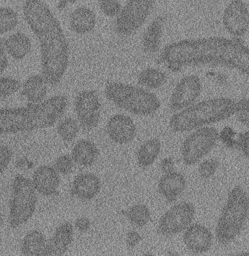
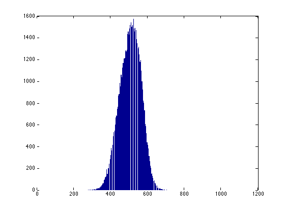
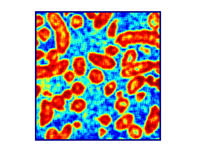
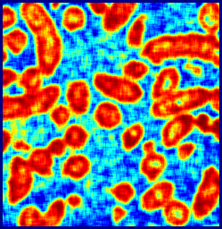
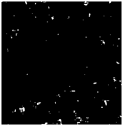
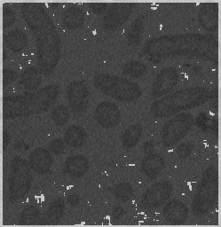

From Voxels to Knowledge: A Practical Guide to the Segmentation of Complex Electron Microscopy 3D-Data Wen-Ting Tsai (1), Ahmed Hassan (1), Purbasha Sarkar (2), Joaquin Correa (1) (3), Zoltan Metlagel (1), Danielle M. Jorgens (1), Manfred Auer (1) (2)
- Life Sciences Division, Lawrence Berkeley National Laboratory, Berkeley, CA 94025, USA.
- Joint Bioenergy Institute, Physical Biosciences Division, Lawrence Berkeley National Laboratory, Berkeley, CA
- National Energy Research Scientific Computing Center, Lawrence Berkeley National Laboratory, Berkeley, CA
Automated segmentation of bacteria This example shows a method to perform 2D segmentation of bacteria using VLFEAT and MATLAB's Image Processing Toolbox.
run_bact_seg.m The parameters used are example specific
in_dir Work directory rad Margin nbins Number of bins thr Background threshold Corr Correction factor (Corr) di Correction factor (dI) LS Correction factor (LS) bgd_area_th Background area for im opening cell_area_th_low Cell area low cell_area_th_high Cell area high rad_s Estimated cell radii thr_pb Theshold for prob map
Params
close all; clear all; in_dir = 'JoVe/images'; rad = 3; nbins = 4; thr = 0; Corr = 0.9; di = 1; LS = 0; bgd_area_th = 10000; cell_area_th_low = 20000; cell_area_th_high = 30000; rad_s = 30; thr_pb = 0.1; all_ims = bact_seg(in_dir, rad, nbins, thr, Corr, di, LS, bgd_area_th, cell_area_th_low, cell_area_th_high, rad_s, thr_pb);
Warning: Directory already exists.     